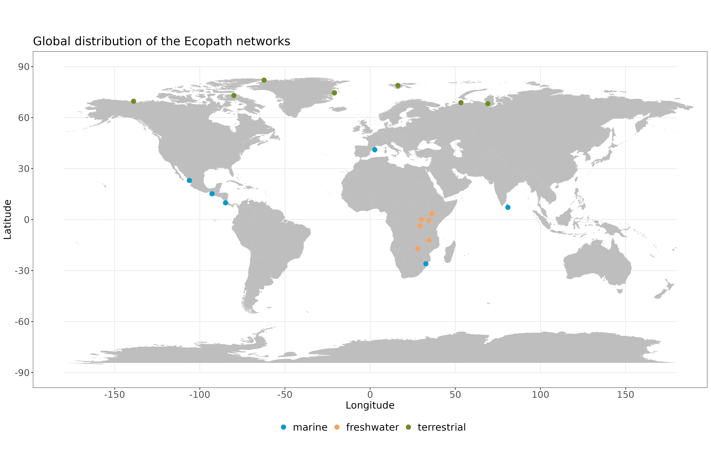

Trophic interactions make the backbone of ecological communities (Bellingeri & Bodini 2016; DeLong 2021; Wootton & Emmerson 2005), linking every component through nutrient and energy flows (Lindeman 1942). Consumer-resource interactions of varying strength play a crucial role in shaping important ecosystem functions and processes (Curtsdotter et al. 2019; Duffy 2002; Koltz et al. 2018; Montoya et al. 2003; Wilmers et al. 2012) such as disease dynamics, invasive species and biogeochemical cycles (Estes et al. 2011). Identifying species interactions and quantifying their strength is necessary to understand community composition (Paine 1992), stability (Bascompte et al. 2005; de Ruiter et al. 1995; Neutel 2002; Nilsson & McCann 2016) and the resulting associated ecosystem services (Montoya et al. 2003). Global changes have a diversity of impacts on species themselves, but also how they interact and the resulting assemblages and functioning (Koltz et al. 2018; Lurgi et al. 2012). Empirical observation of these interactions and the evaluation of their strength is however challenging, if not unfeasable due to their sheer amount, sampling biases and the emergence of novel interactions between species that never co-occurred (Aguiar et al. 2019; Jordano 2016; Wootton & Emmerson 2005). The study of ecological networks has therefore recently moved to the development of predictive tools to overcome the limitations associated with empirical sampling of trophic interactions (Poisot et al. 2016). Different models are derived from food web theory, such as the niche model (Williams & Martinez 2000), the nested-hierarchy model (Cattin et al. 2004), trait-matching model (Bartomeus et al. 2016) or physical constraints (Portalier et al. 2019). More recently, Strydom et al. (2021) developed a general framework to predict interaction probabilities between species in a community context. These methods are however mostly qualitative, i.e. they are meant to predict if there is an interaction or not, and there is a pressing need to expand them to quantitative interactions, where the strength of interaction between any two organisms is described.
There are many definitions of interaction strength (Berlow et al. 2004), and among them biomass flows can be particularly suited for the development of predictive models. Biomass flows between consumers and resources can be derived from functional traits, with the promise of a standardized measure independent of taxa involved (Berlow et al. 2004). Quantitative predictive models of biomass flows might also offer potential support to the study of biodiversity and ecosystem functioning relationship, as it seeks to depict all energy flows within communities (Barnes et al. 2018). Biomass flows are defined as a quantity of resource biomass that is consumed by a consumer per unit area and unit of time, reporting how energy circulates through the food web (Lindeman 1942). Interaction strengths between consumers and resources is closely related to predation rate in a food web model, namely the functional responses ](Rall et al. 2012). Functional response theory aims at describing the change in feeding rate of a consumer, or how many prey or resource a consumer can predate per unit area over time, relative to prey or resource availability (Holling 1959a, b; Solomon 1949). Where the functional response describes the actual number of individual prey or resource predated by a consumer per unit area over time, biomass flows describes the amount of biomass flowing from a prey or resource to a consumer per unit area over time. Since both quantities report the rate of the same underlying process that is predation, we anchored the development of our modeling approach in functional response theory.
A fundamental principle underlying the majority of functional responses is the mass action, stating that predator and prey move randomly in an area and encounter at a rate proportional to the product of their abundance and their velocity. Here we will focus on the two most commonly used types of functional responses. The type I functional response describes mass action only, where the amount of resource consumed depends on the resource and consumer densities, and the rate (formerly reffered to as attack rate and hereafter space clearance rate (DeLong 2021)) at which a consumer searches its home range for resources, leading to random encounters followed by detection, attack and consumption. The type II functional response describes the same process as the type I, but with the addition that consumption saturates with prey availability because of the time required to process prey. These processes are influenced by a multitude of functional traits and environmental conditions (Beardsell et al. 2021, 2022). The space clearance rate parameter varies with consumers and resources intrinsic characteristics such as absolute and relative velocities, perception of the environment and cognitive abilities (DeLong 2021). It is also influenced by externalities such as habitat complexity (Barrios-O’Neill et al. 2016; Hall et al. 2000; Manatunge et al. 2000) and the presence of refugia (Hoddle 2003) impeding detection probability. The dimensionality of an interaction, whether it takes place in a two or three dimensional plane, also impacts encounter rates and detection probability (Pawar et al. 2012, 2019). For instance, a predatory bird searching for preys from above or fishes grazing the benthic surface are examples of 2D planes while aerial insectivorous birds pursuing flying insects or fishes chasing preys in the water column would be in a 3D plane. Functional response theory therefore makes a good start to develop predictive models of quantitative interactions since widely measured functional traits can be combined with consumer and prey density to predict biomass flows.
The space clearance rate, in units of space per time, reports the amount of area search by the predator in a time interval. As with many biological processes, the space clearance rate was shown to vary with consumers body mass. Indeed, multiple studies, summarized in the FoRAGE database (Uiterwaal et al. 2022), showed an allometric scaling between the space clearance rate and the body mass of consumers. This observation is coherent with (Hirt et al. 2017, 2020) who documented that the maximum velocity of an organism scales with its body mass. Handling time is also expected to follow the same scaling relationship (DeLong 2021), although recent studies are now suggesting that consumers handling time would not be as important at natural resources densities (Beardsell et al. 2021; Chan et al. 2017; Coblentz et al. 2023; Preston et al. 2018). Ultimately, an accurate evaluation of these parameters is necessary as they are widely used in theoretical models (Brose et al. 2006; Brose et al. 2008; Pawar et al. 2012). Restraining the parameter space could greatly bonify studies of species coexistence, community stability and trophic regulation. It could also help the parameterization of global ecosystem models used for biodiversity scenarios (Harfoot et al. 2014}). Following (Yodzis & Innes 1992), there are a few meta-analyses looking at the scaling of feeding rates with body-mass (Rall et al. 2012). These are however concentrated on a re-analysis of univariate functional responses, mostly from experimental studies, and there is currently no study aiming at reconstructing quantitative interaction networks.
Our main objective is to test if we could model quantitative interactions in complex food webs with easily accessible information such as abundance and body mass. We compared statistical models derived from functional response theory, including type I and type II forms. We also investigate if allometric relationships between space clearance rate, handling time and consumer body mass can contribute to the prediction of biomass flows in diverse food webs. To do so, we developed four hierarchical models of pairwise quantitative interactions of increasing complexity and evaluated them with empirical data of biomass flows between consumers and resources. We curated Ecopath networks (Christensen et al. 2005) describing marine, aquatic and terrestrial food webs and extracted 1380 pairwise trophic interactions between consumers and resources. Each model represents its own hypothesis and their comparison allow the evaluation of different mechanisms driving interactions.
Material and methods
A litterature search was performed to gather empirically sampled trophic networks with measurements of biomass flows from resources to consumers, along with population densities. Food web data are notoriously heterogeneous (Mestre et al. 2022) and we therefore relied on Ecopath models (Christensen et al. 2005) to normalize data collection. Ecopath is a modelling software that relies on a mass-balance premiss and a multitude of parameters (production/biomass ratio, consumption/biomass ratio, diet compositions etc.) to provide a realistic static image of the flows of biomass between resources and consumers in an ecosystem (Christensen et al. 2005). It was shown the Ecopath methodology reduces biases in comparative analyses among food webs (Brimacombe, in review). We therefore collected openly available models from Ecobase (Colléter et al. 2013) and worked with a subset of the models present in (Jacquet et al. 2016). Taxonomic resolution of Ecopath models is highly variable and it is not uncommon that species are lumped into functional groups. The models were therefore selected based on the taxonomic resolution with the criteria that most nodes must be resolved at the species level, or that species within functional groups were taxonomically resolved. We thus curated 19 Ecopath models (detailed list in supplementary material) from aquatic, marine and terrestrial environments (fig. 1), and trophic guilds spanning from mammal carnivores and herbivores, birds, pelagic carnnivorous and herbivorous fish, demersal carnivorous and herbivorous fish and invertebrates.

Species identity in the Ecopath models were validated with the original publication and estimates of adult mean body mass was retrived from literature. Body mass for terrestrial species came from different sources such as the GATEWAy database (Brose 2018), the original publication for which the Ecopath model was developped or grey literature. Body mass for marine and freshwater species came from Fishbase (Froese et al. 2023) and Sealifebase (Palomares et al. 2023). When only body length was available, Fishbase and Sealifebase calculated weight from body length using a bayesian length-weight model. The midpoint between the minimum and maximum measurements was taken when a mean was not available. Density (number of individuals per unit surface, N/km2) was computed by dividing total biomass per unit surface B (metric tons/km2) by mean body mass M (metric tons). The 19 Ecopath models were aggregated in an edge list with quantitative biomass flows (metric tons/km2/year), for a total of 1380 interactions between 154 consumer species and 153 resource species.
Model description
We developed four different hierarchical models of increasing complexity based on the type I and type II functional responses, and a null model. Models were then parametrized with Hamiltonian Monte Carlo (Monnahan et al. 2017), compared and ranked from better to worst based on their prediction accuracy. The functional form of these relationships are presented below.
Model 0 - Null model
The null model acts as a basis of comparison with the other models and does not portray any ecological realism of a trophic interaction. Model 0 hypothesizes that the flow of biomass Fij from a prey i to its predator j is constant with average K, irrespective of predator identity:
Fij = K